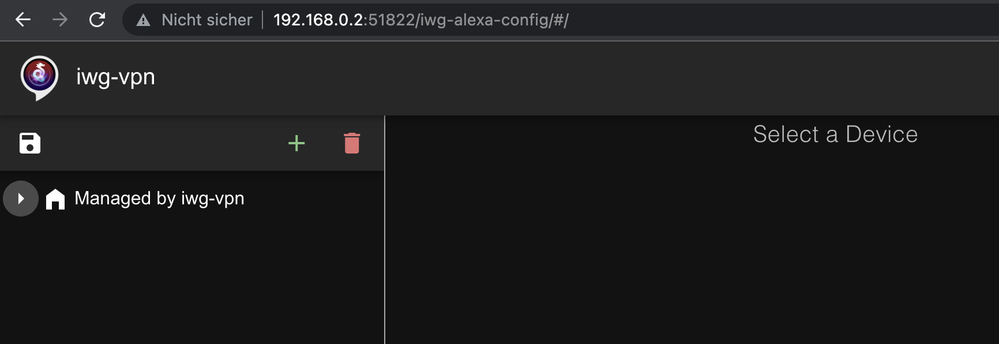
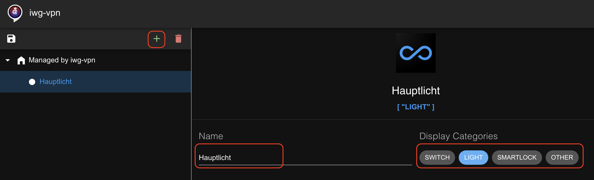
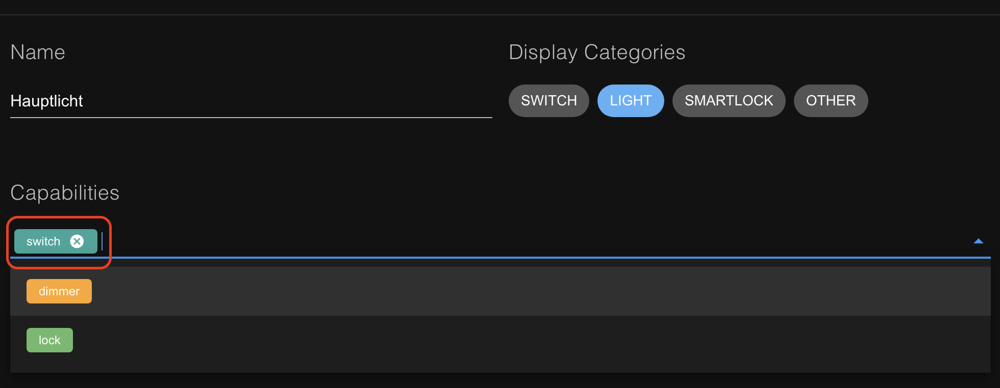
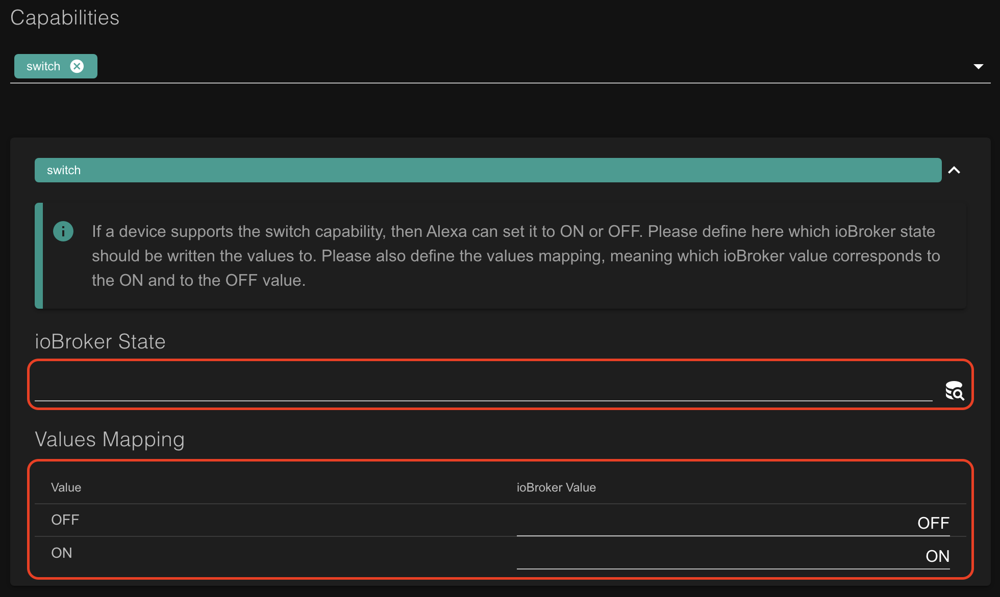
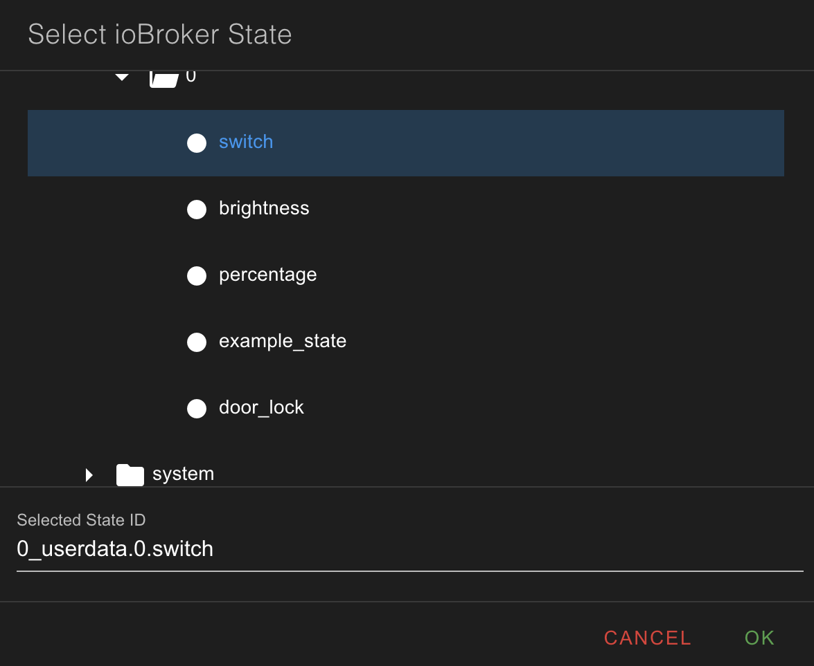
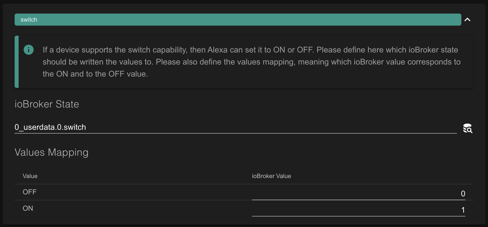
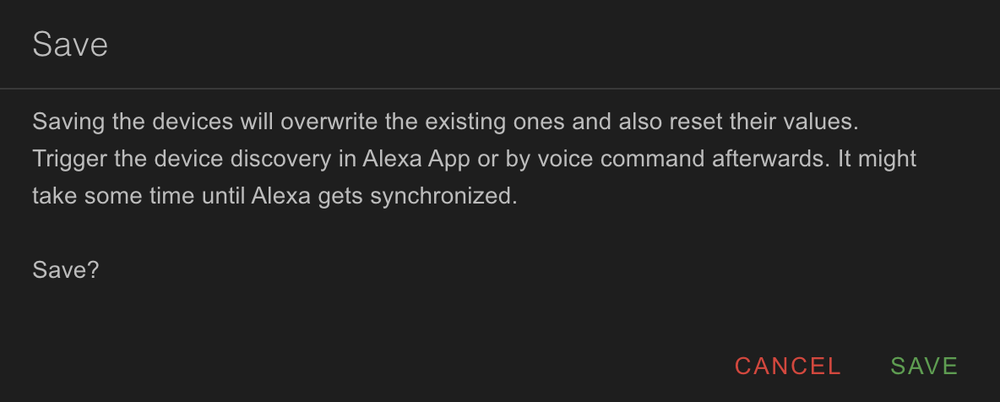

Overview
Once everything configured you'll be able to interact with your Alexa voice assistant to control your devices. The rest is taken care by your ioBroker.iwg-vpn adapter and
iwg-vpn Alexa skill.

To get started the following things need to be done:
- Get a basic understanding of Alexa concepts
- Configure controllable via Alexa devices
-
Activate and link the
iwg-vpn skillto your ioBroker installation - That's it :)
Please note, that the skill sends your Alexa commands to your ioBroker installation via the VPN. Even if you're not considering to use the remote access or NAT provided by the ioBroker.iwg-vpn adapter, you still have
to install WireGuard at least on your ioBroker host and setup the adapter as described
here to control your devices via Alexa.
Alexa Concepts
This is pretty easy. Every device Alexa can control has to respond to Alexa requests and commands in a certain way. As Alexa cannot talk directly to your local devices, and your devices probably don't respond to Alexa requests properly, a proxy is required,
which accepts the Alexa requests, translates them into the commands the local devices understand and replies back to Alexa. An Alexa skill in general and the iwg-vpn skill in particular is a
such proxy.
Every Alexa device has to announce so called capabilities it supports. Every device supports at least one capability. This is how Alexa knows which commands can be sent to a device. For example, if a device supports
switch capability, Alexa knows that the device can be turned ON and OFF.
While sending a request or a command to a proxy, i.e., to a skill, Alexa also sends a unique identifier of a device, the command should be forwarded to, and a unique identifier of a linked account, the command was issued by. The linked account represents
your ioBroker installation. This is how the skill knows the exact destination of the command. The Account Linking is done by activiation of the skill with a unique set of credentials assigned
to your ioBroker installtion.
Even if it sounds a bit complicated rigth now, don't worry. Almost everything is done behind the scenes by the skill. This is what it is supposed to do :) The rest is described below.
Device Configuration
As mentioned, Alexa has to know which devices are available in your ioBroker installation and which capabilities they support.
To open device configuration navigate to <your ioBroker IP>:51822/iwg-alexa-config.html

Initially there are no devices. To add a new device hit the
+ button. A device with the name "New Device" is added. Change the name of the device to a desired one and select the corresponding Alexa display category(ies):

If you try to save the configuration now, you get the error message saying "A device must have at least one capability".
So let's open the combobox and add the capabilites the Hauptlicht device supports. In this example we just select the switch capability to be able to turn the light ON and OFF via Alexa.

When you finish adding the capabilities and close the combobox, the selected capabilites are added to your device and can be configured. Expand the switch capability panel to open the configuration. Some capabilities
have pre-defined values the Alexa sends to a device. So the switch capability with pre-defined values ON and OFF. Here we have to provide two things: first, which ioBroker state should a value
be written to, and second - the values mapping, i.e. which value should be written in case the Alexa sends the value ON and which - in case the Alexa sends the value OFF. This mapping is also used to report
the values to Alexa on Alexa request. A value currently the ioBroker state is set to will be converted to either ON or OFF, according to the mapping, and then reported to Alexa.

If a capabilty doesn't have any pre-defined values, the mapping is not required. E.g., in case of the dimmer capability Alexa sends values between 0 and 100 to adjust brightness of a device. In this case the value
will be written as is into the selected ioBroker state.
To select an ioBroker state the values should be written to just click on the search icon and choose a state:

To define the mapping - type the values directly into the table. Once done, you should get something like this:

Please ensure, that the type of the selected state corresponds to the type of values defined in the mapping. Also be aware, that if a state value cannot be converted to an Alexa pre-defined value or vice versa due to a missing or a wrong mapping, Alexa will complain about that :)
That's it! The configuration of the Hauptlicht is finished and can be persisted. Press the save icon, confirm the warning and ensure the success confirmation appears:

Next step is skill activation and account linking.
Activate the Skill and Link your ioBroker Installation
You can activate the skill using your Alexa app or via Amazon Web-Site. In this example we'll do it via the Web-Site.
Navigate to the iwg-vpn Alexa skill page, login with your Amazon account (the account your registered your Alexa with) if required and hit Aktivieren. This will take
you to the account linking page where you should login using the credentials generated for you in the device configuration UI (click on the link icon in the upper-right conner to display the credentials):

If everything goes well your skill is activated, linked and you can start device discovery directly on the Web-Site or just asking your Alexa

As soon as Alexa device discovery is finished, open Alexa app and turn ON your Hauptlicht or, even beter, just say: "Alexa, schalte mein Hauptlicht ein"

Limitations
Currently only the following capabilities are supported:
- switch
- deemer
- lock
- motion-sensor
- doorbell
Support
In case you have a question or missing a feature feel free to contact iwg.vpn@gmail.com